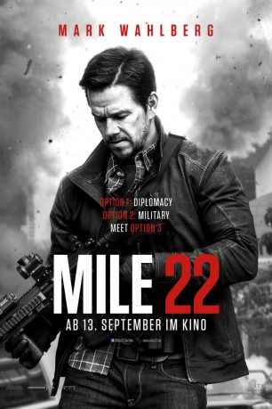
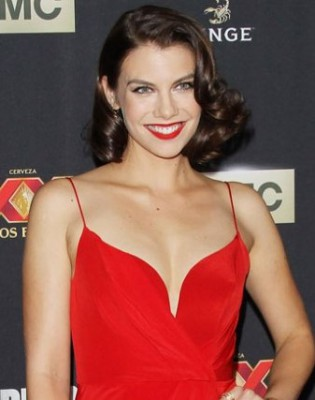
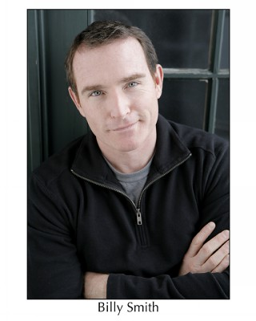
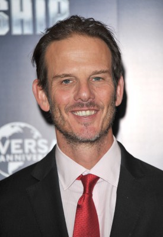
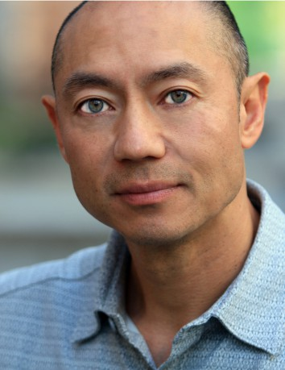
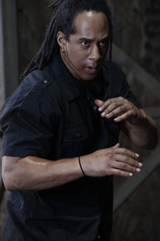
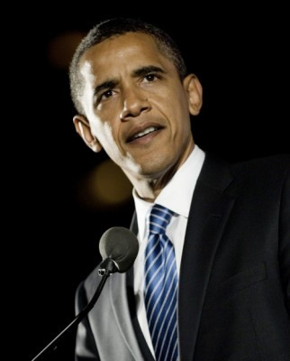

#9934 Mile 22
 gesehen am 18.04.2019
gesehen am 18.04.2019
 
 IMDB-Wertung: 6.1 / 10
IMDB-Wertung: 6.1 / 10  Tomatometer: 22
Tomatometer: 22  Metascore: 38
Metascore: 38 
Elite-Agent James Silva wird in die Botschaft eines südostasiatischen Landes einberufen, um eine gefährlich hohe Menge an verschwundenem radioaktiven Material wiederzubeschaffen, das mehrere Großstädte weltweit auslöschen könnte.
Jahr: 2018
Dauer: 94 Minuten
FSK: 16
Land: USA Studio: STX EntertainmentTonspuren: DD5.1 - ,
Untertitel: Deutsch, Englisch,
Auflösung: 1080p (1920x800) Größe: 6973 MB
Genre: Action, Thriller, Abenteuer, Krimi
Regisseur:  Peter Berg
Peter Berg
Drehbuch: Lea Carpenter, Graham Roland, Lea Carpenter
Soundtrack: Jeff Russo
Darsteller:
 Mark Wahlberg als James Silva
Mark Wahlberg als James Silva-  Lauren Cohan als Alice Kerr
 Iko Uwais als Li Noor
Iko Uwais als Li Noor John Malkovich als Bishop
John Malkovich als Bishop- Ronda Rousey als Sam Snow
- Carlo Alban als William Douglas III
- Natasha Goubskaya als Vera
- Sam Medina als Axel
- Keith Arthur Bolden als King
- Jenique Hendrix als Knight
-  Billy Smith als Rook
 Myke Holmes als Pawn
Myke Holmes als Pawn- Emily Skeggs als M.I.T.
- Terry Kinney als Johnny Porter
- Brandon Scales als Jacob Stone
- Poorna Jagannathan als Dorothy Brady
-  Peter Berg als Lucas
- Elle Graham als India
- Nikolai Nikolaeff als Aleksander
- Ariel Felix als Deputy Foreign Minister
- Tom Astor als Technician
- Kate Rigg als Miss Moon
- Tatiana Ronderos als Mother
- David Garelik als Anatole Kuragin
- Alla Greene als Safe House Russian Woman
-  Vince Canlas als Safe Café Owner
- Sean Avery als Assault One
- Scott Kasson als Marine
- Cedric Gervais als Greg Vickers
- Rich Rutherford als Tony Po
- Alexandra Vino als Sergeant Thomas
- Jennifer 'Ms Fer' Russell als Traveler (uncredited)
- Forrest Briggs als CIA Case Officer (uncredited)
-  Lateef Crowder als Thug (uncredited)
- Sam Looc als Infirmary Medical Technician (uncredited)
- Michael Pierino Miller als Embassy Employee (uncredited)
- Kevin J. O'Connor als CIA Case Officer (uncredited)
-  Barack Obama als Himself (archive footage) (uncredited)
- Rick Perez als Overwatch Lead Analyst (uncredited)
- Patrik Stanek als Russian (uncredited)
- Donald Trump als Himself (archive footage) (uncredited)
- Raven Wynn als Waitress (uncredited)
- Chae-rin Lee als Queen
- Lourdes Perea als Girl
- Mark Freeman Schotz als Marine Guard / Interviewer
- Anthony 'Ace' Thomas als Marine
- Tory Bryant als Marine
- Rafael Alfredo Caviedes Silva als Marine
- Juan Carlos Henao Jimenez als Marine
- Guillermo Ramirez Navia als Marine
Datei: X:\2018(G-M)\Mile 22 (2018, FSK16, 1920x800).mkv seit 14.11.2018
Festplatte: HD 2018(G-Z)-2019(A-Z)
 Es gibt insgesamt 138 Filme in der Gruppe '2018(G-M)'
Es gibt insgesamt 138 Filme in der Gruppe '2018(G-M)'